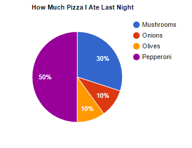
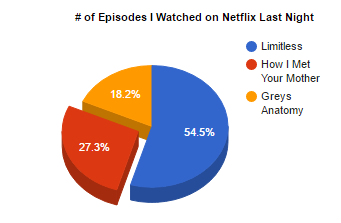
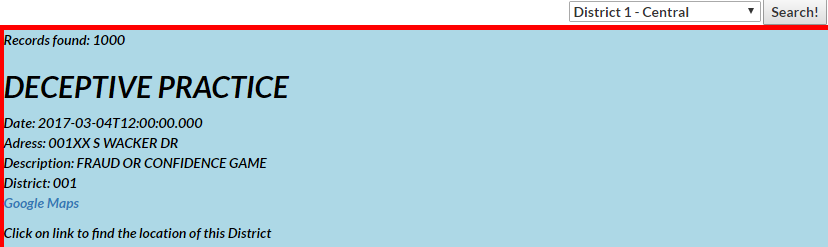

Air Horn
This project is simply an airhorn. It installs a service worker, so it is able to work offline, and can also be used to annoy friends.

Pie 1
We enter data into the html, where Google then takes it through their chart process and creates this wonderful pie chart.

Pie 2
Same thing as Pie 1, but now includes personal data3-D and bold slice effect.

Crime Finder
Uses API key and dropdowwn box to get certain values from data to use district numbers to find the crimes that're reported in the choosen district's area.